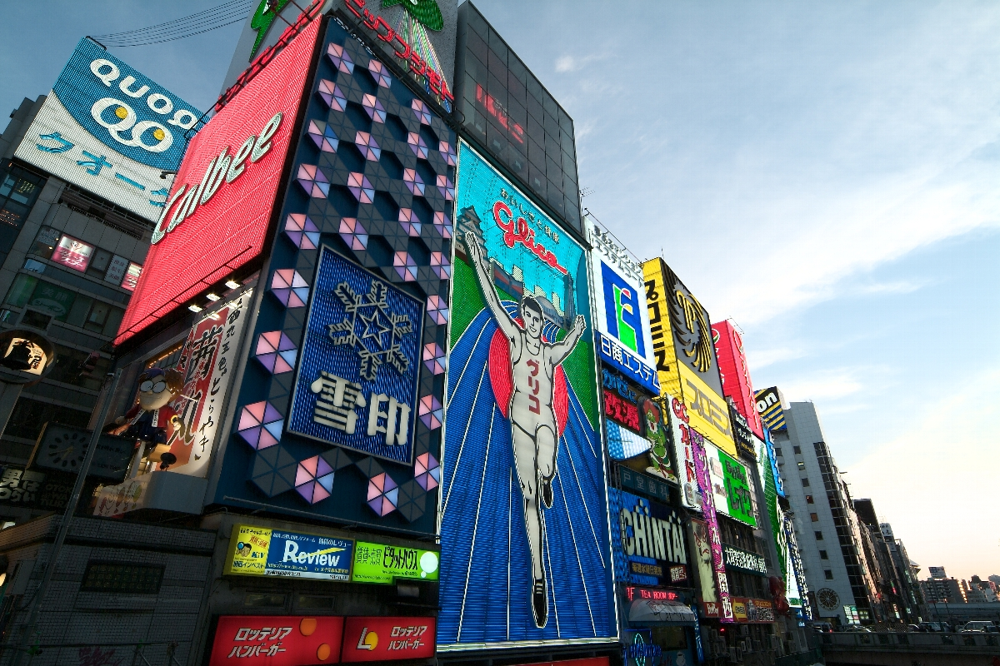
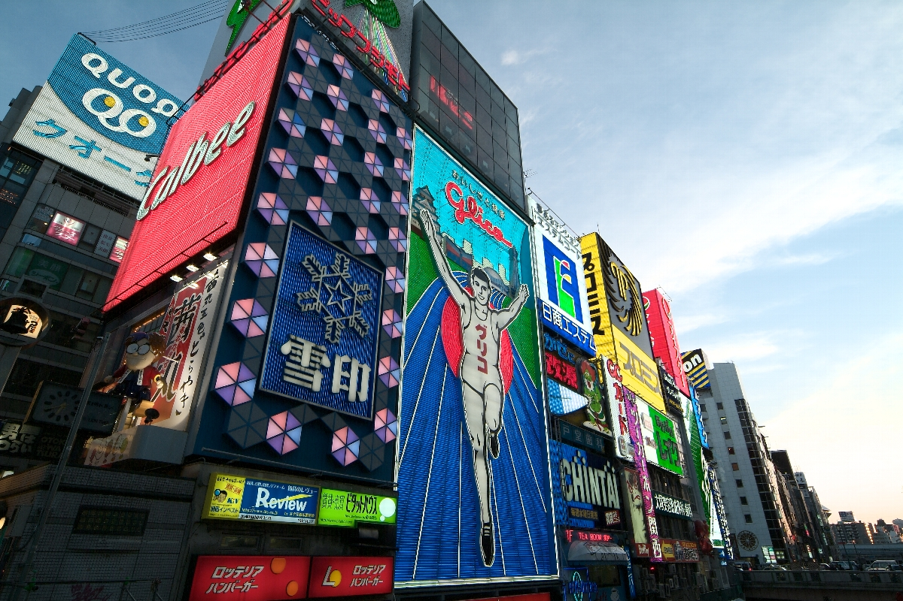

景點介紹
大阪是遊客和狂歡者的天堂。在道頓堀，高聳的霓虹燈招牌、會所、酒吧以及供應當地特色美食的餐廳比比皆是。在這裡可以體驗到刺激而又不容錯過的大阪夜生活。
道頓堀橋：大阪中心
道頓堀旁有一座具 400 年歷史的運河。運河上方的橋是一個相當熱門的拍照景點，從這裡可以看到固力果先生 (Glico Man) 的廣告招牌。招牌上的運動員正對戎橋，是大阪的著名地標。
大阪是遊客和狂歡者的天堂。在道頓堀，高聳的霓虹燈招牌、會所、酒吧以及供應當地特色美食的餐廳比比皆是。在這裡可以體驗到刺激而又不容錯過的大阪夜生活。
道頓堀旁有一座具 400 年歷史的運河。運河上方的橋是一個相當熱門的拍照景點，從這裡可以看到固力果先生 (Glico Man) 的廣告招牌。招牌上的運動員正對戎橋，是大阪的著名地標。
